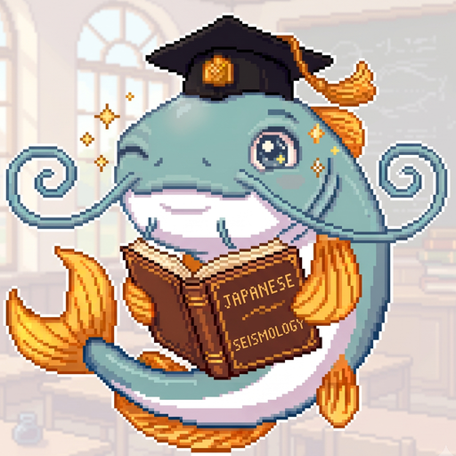
🐟 Jishin Sensei — Press Kit
Japan Earthquake Safety Quiz · iPhone · free · English, 日本語, 한국어, 简体中文, 繁體中文
A daily earthquake-safety quiz for people visiting or living in Japan, with show-and-point emergency cards and an offline guide. Made by a solo developer in Japan.
One-line description
- EN One question a day on earthquake safety in Japan, with show-and-point emergency cards and an offline guide. Five languages, all free.
- JA 「地震のとき、どうする？」を1日1問で。見せて伝えるカードと、圏外でも開ける緊急時ガイドも。5言語対応、すべて無料。
- KO 하루 한 문제로 익히는 일본 지진 안전. 보여주며 전하는 카드와 오프라인 긴급 가이드까지. 5개 언어, 전부 무료.
- ZH-Hans 每天一题，学会在日本遇到地震时该怎么做。附指给对方看的会话卡和离线紧急指南。5 种语言，全部免费。
- ZH-Hant 每天一題，學會在日本遇到地震時該怎麼做。附指給對方看的會話卡和離線緊急指南。5 種語言，全部免費。
Boilerplate
Jishin Sensei ("Earthquake Teacher") is a free iPhone app that teaches earthquake safety in Japan one question a day. Namazu Sensei — the catfish of Japanese earthquake folklore — asks a real-life scenario each day and explains the answer with a link to the official source. The Prepare tab holds show-and-point phrase cards, a health card and a sign dictionary for the moment you need to communicate; the Emergency tab works fully offline. The app runs in English, Japanese, Korean, and Simplified and Traditional Chinese, and every part of it is free. It is made by Makoto Katano, a solo developer in Japan.
Facts
Jishin Sensei is not affiliated with any government body. Japan's official alert app is "Safety tips" (Japan Tourism Agency), which the app recommends installing.
Screenshots
App Store screenshots, 1.0.6. English set of eight; the first screen in each of the other four languages. Full-size PNGs (1320×2868) are in the ZIP.
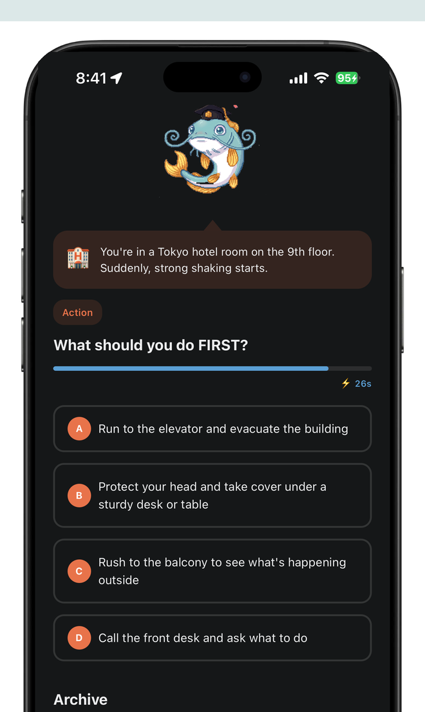
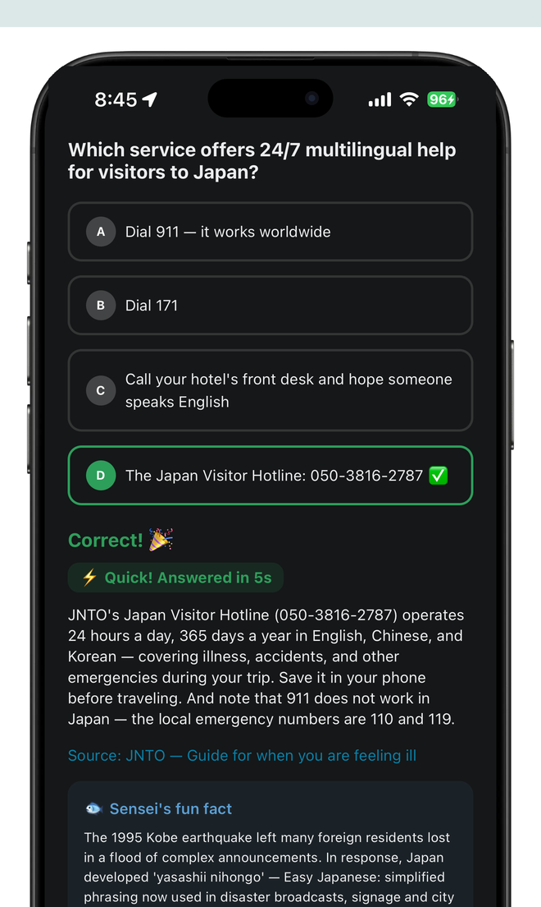
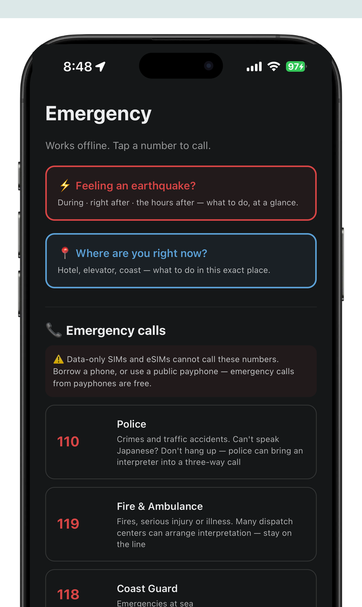
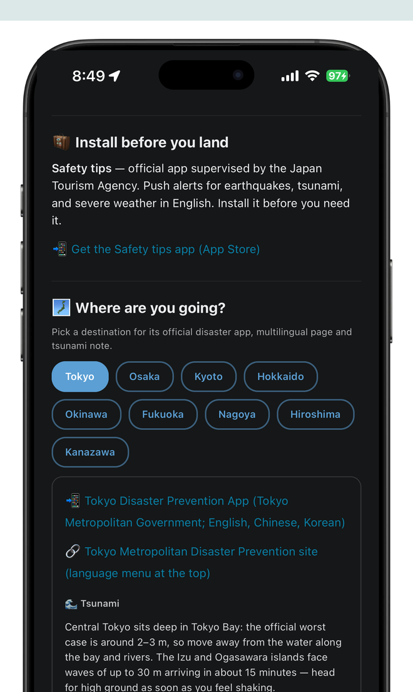
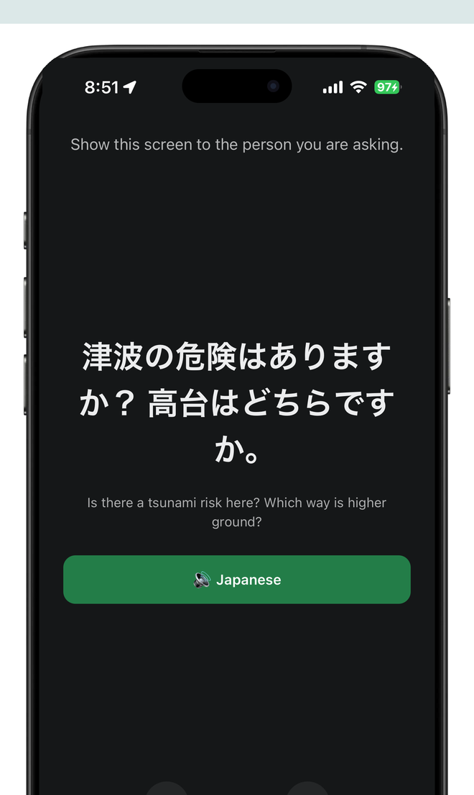
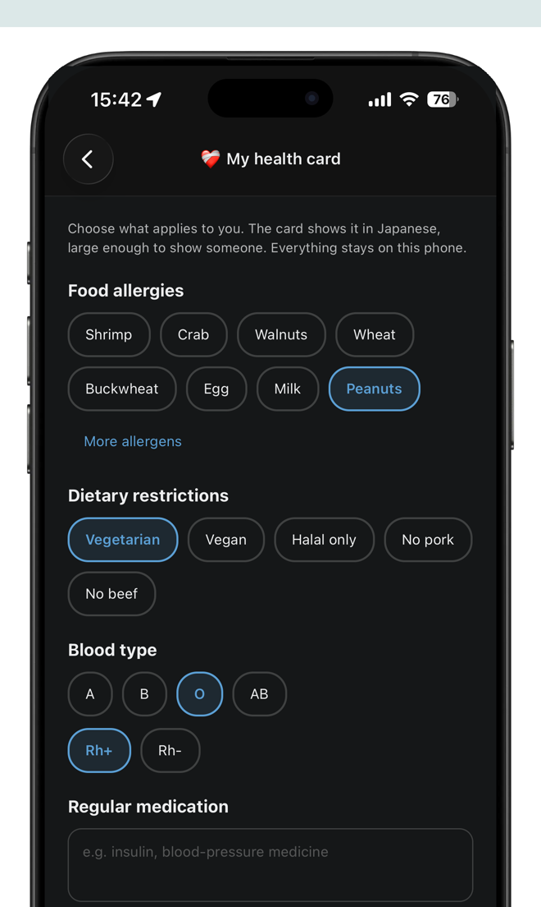
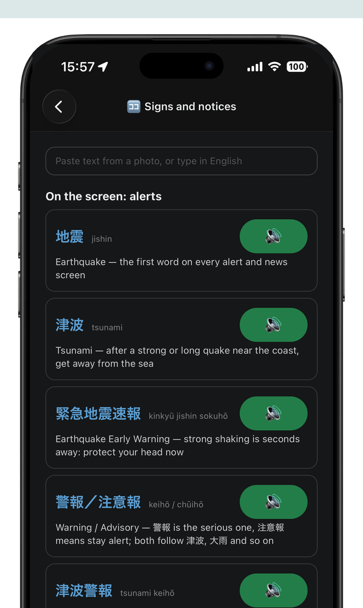
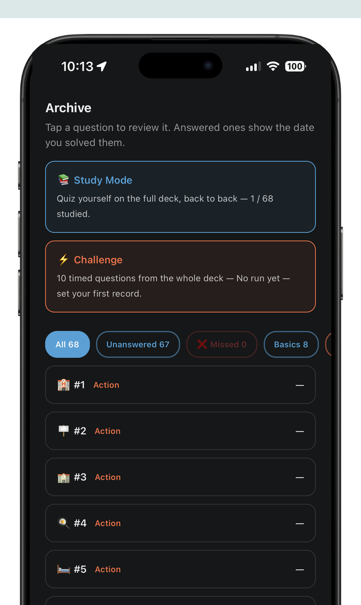
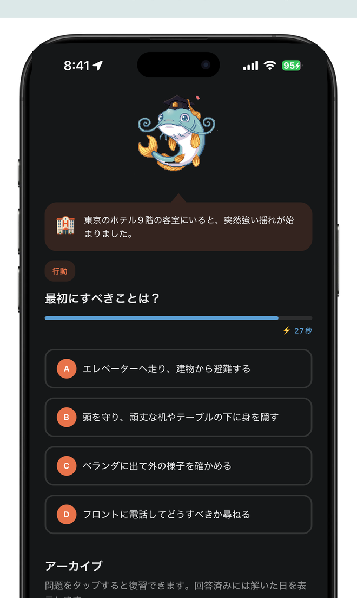
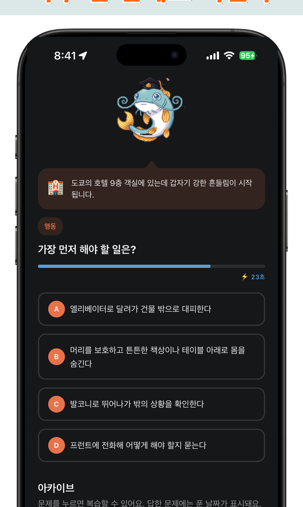
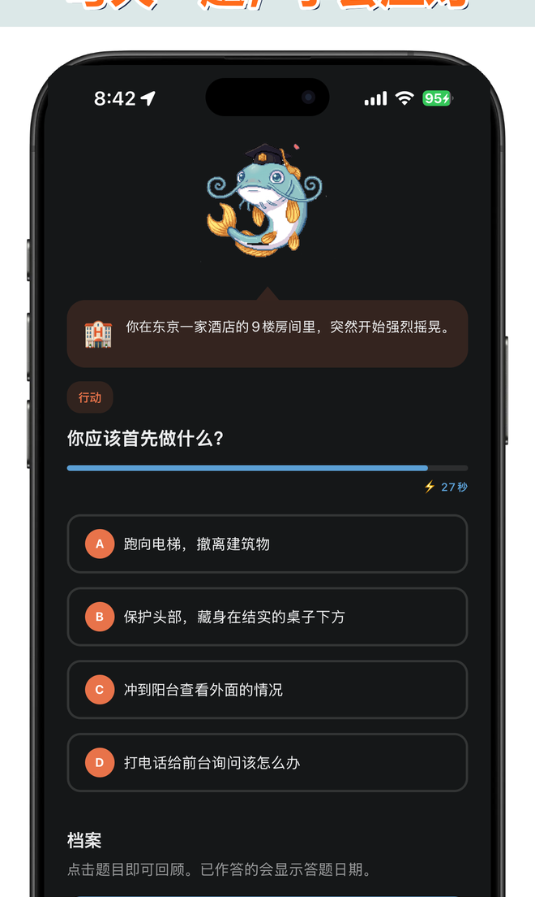
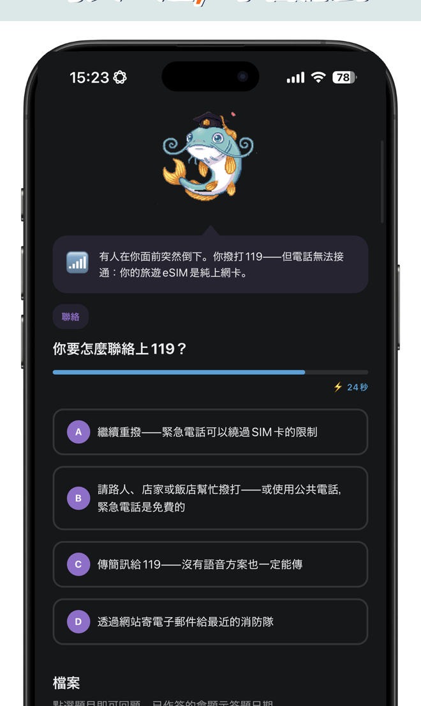
Artwork
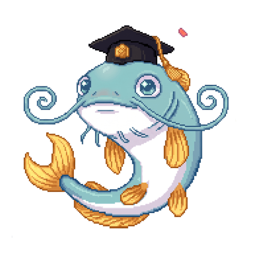
Artwork and screenshots may be used in coverage of the app. Please do not alter the sensei.
Poster (A4, five languages)
"What do you do when the ground shakes?" with a QR code to the App Store. Free to print and display — schools, hostels, information desks, community lounges. 300 dpi PNG, A4 portrait. All five are also in the ZIP.
{kind=link}
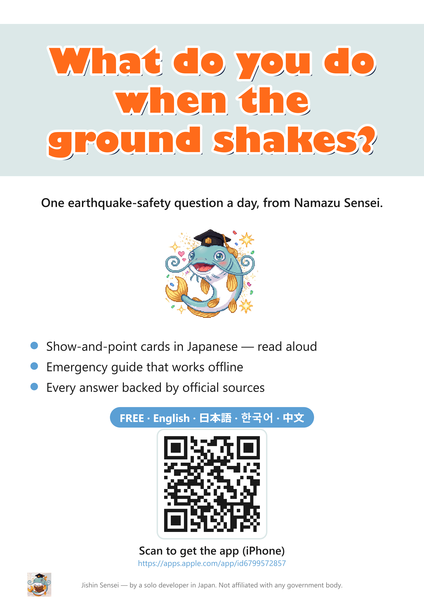
Download: English · 日本語 · 한국어 · 简体中文 · 繁體中文
{kind=link}
{kind=link}
{kind=link}
{kind=link}
Why a catfish, and why free
In Japanese folklore a giant catfish (namazu) living beneath the earth was said to cause earthquakes; after the great Edo earthquake of 1855, hundreds of namazu-e prints turned the catfish into a popular character. Jishin Sensei makes him the teacher: each day he asks what you would do, then shows the official answer.
Everything in the app is free so that nothing anyone might need in an emergency sits behind a purchase. People who want to say thanks can leave a tip for the sensei in Settings; it unlocks nothing.
Contact
Press: sukunabicco@gmail.com — Makoto Katano. Screenshots in other languages, review notes or a short interview are one reply away.
Support and bug reports: GitHub Issues.